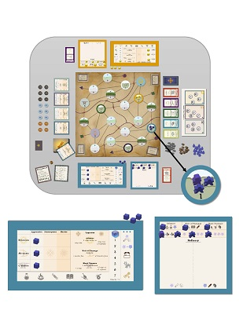

Professional Background & Sundry
My professional career started in environmental studies with an interest in climate and energy. In undergrad,
I worked in an ice-core laboratory, prepping samples for analysis in the mass spectrometer. This was my
introduction to the world of data.
After college I got a job working for an energy efficiency consulting company
whose clients were electric and gas utilities. I maintained an interest in human behavior and
social psychology throughout this work, and eventually pursued a phd in social psychology, during which time I worked
in a social psych research lab and happened to take an advanced statistics course taught in R.
R gave me my first
taste of coding, something I took to immediately, though I had essentially no computer science up to this point. I ended up choosing to work
for another consulting company in the field of mental health and social services, instead of continuing work on the phd.
This turned out to be an excellent job where I worked every day with complicated health datasets, using R and excel to automate the data wrangling
and analysis process, as well as to build several tools for internal project and staff planning.
While doing this,
my interests and work started to drift away from the more analysis-focused aspects of the work, and towards
automation, coding, and data engineering. I also developed several Shiny web applications through R for interactive data exploration and
dashboarding (a term I have come to regard with suspicion and apprehension.)
Project Highlights
- Mental Health Prevalence Shiny Dashboard (Opens in a new tab)
- This was a 6-month project for a client who wanted to show mental health and substance use prevalence by region
in the state of Oklahoma. It combined data from the Census, the National Survey of Drug Use and Health, and GIS shapefiles
among other sources. Roughly as much time went into the underlying data work as into learning how to implement the various
display approaches in Shiny. As the sole author, this project was an excellent learning opportunity and proved to me that, as happy as
I was with this result, there was still a lot to learn.
- Interactive staff hours by project by month planning tool (Shiny)
- Automated project planning excel worksheets
- Myriad analyses of MH and SUD program implementations involving linear modeling and cost effectiveness studies
- Fully automated R script to read in health data over time from National Outcomes Measures tool and spit out over 40 formatted summaries.
This made it possible to generate 10-20 separate reports showing program progress on a quarterly basis.
Why Web Development
There used to be a coffee shop in Boulder called The Cup. This was a favorite spot
to work. There was a large, colorful poster in the back, a cartoon-style thing of a girl
holding a number of balloons, with large stylized block text over the whole image. The text read,
YOU SHOULD MAKE THINGS. Until this point in life, I hadn't made much. In fact, I had a mentality
that tended to keep me from making things. Looking back, it's remarkable how big changes in thinking
and behavior can come from seemingly small things in the moment. This poster was one of those things.
The more times I saw it, the more I came to think, "yeah, I should make things."
This was long before I knew I liked and wanted to code, but I bothered to tell the story because
there's more to coding for me than my love of puzzles and the great feelings of satisfaction I get
from automating a previously gnarly manual process: I like to create. In my mind, software engineering
and coding in general are all in service of adding something useful to the world, which I've
come to see as distinctly preferrable to merely engaging in arbitrage, or other zero sum activities (my poker habit notwithstanding).
In the long run I believe my work at coding temple is going to serve a broader goal of putting my coding
skills to work in data engineering applications. The more I've learned and the more I've spoken to my peers
who have also completed coding bootcamps, the more I realized that the next step in my
personal development needed to be a full-stack bootcamp. This is something I've long wanted to do, and I'm very excited
to at last have the opportunity to take the plunge.
Pottery
I've been making bowls, cups, and plates for the last several years, and am the sole-propiretor
of Good Catch Pottery. Perhaps a new, self-built website is in Good Catch Pottery's near future. In the mean time, you can
check out a couple introductory videos about my pottery process below (thumbnails take you to youtube.)
Skill & Stature

I'd be remiss not to mention that a friend and I have spent the last 3 years or so attempting to invent a board game.
We are strongly influenced by games like Catan, Firefly (the board game from the show), Scythe, and Dominion. As such,
we've finished our beta, and the beta art has been printed and will be arriving any day now. The game is called Skill & Stature,
and is an engine-builder where the aim is to become the land's next Guild Master.
We're proud to have made it this far, but now comes the difficult task of either producing it ourselves (something neither of
us has time for), or finding a publisher who wants to take a chance and buy it. It's been humbling to realize not only
to expect a litany of rejections, but also that we'd often not even get the chance to be rejected.
We're learning that many publishers don't accept unsolicited pitches for new games. At the moment, I think our best
bet is to bring it to a game conference once we're finished blind-testing all the beta materials and rulebook.
Cats
The following table describes my cats, as shown in the navgallery at the top of the page.
| Name |
Watson |
Zuko |
| Patterning |
Tuxedo |
Tabby |
Relative Weight |
Wiffle Ball |
Bowling Ball |
| Likes |
Pouncing |
Being Sweet |
| Dislikes |
Turkey |
NA |
| Disposition |
Sly |
Doofus |
Would You Rather
Now you know all about me. Let's get to know you. What better way to do this than a game of Would You Rather?